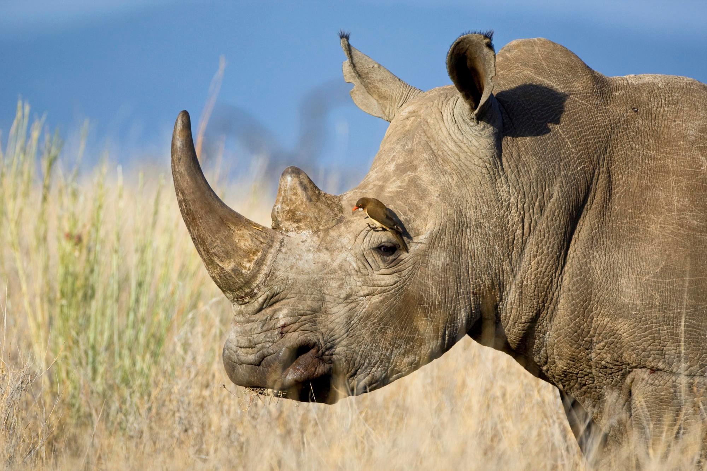

|
It was a very warm period in Earth's history, known as the Eocene. This biological epoch began 55 million years ago and ended 34 million years ago. It was then that rhinos first emerged. Rhinos belong to a group of animals called perissodactyls.
There are two living Rhinocerotini species, the Indian rhinoceros and the Javan rhinoceros, which diverged from one another about 10 million years ago. The Sumatran rhinoceros is the only surviving representative of the most primitive group, the Dicerorhinini, which emerged in the Miocene (about 20 million years ago).
|

|